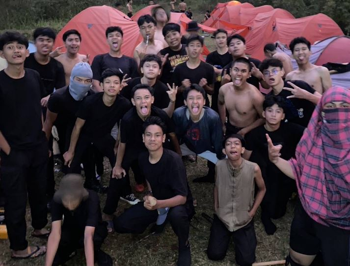

Camprt 3'2026
Pada tanggal 6-7 september dilaksanakan kegiatan CAMPRT (Camping Pramuka Tilu) yang di ikut sertai oleh siswa siswi dari warga SMAN 3 Bandung di Hutan Cikole, Lembang. Siswa dan siswi berangkat ke Cikole menggunakan truk TNI yang sudah disiapkan oleh pihak sekolah. Di kegiatan tersebut siswa dan siswi diajarkan bagaimana cara nya bertahan hidup di hutan ,seperti mengenali lebih dalam tumbuhan-tumbuhan apa yang boleh dimakan, cara pertolongan pertama untuk mengobati teman yang terluka, belajar membangun tenda, belajar tentang materi survival. Kegiatan tersebut juga terjadi kegiatan api unggun, siswa siswi disana dibagi menjadi beberapa regu untuk di perlombakan. Ada 2 lomba yaitu yel-yel dan survival dihutan